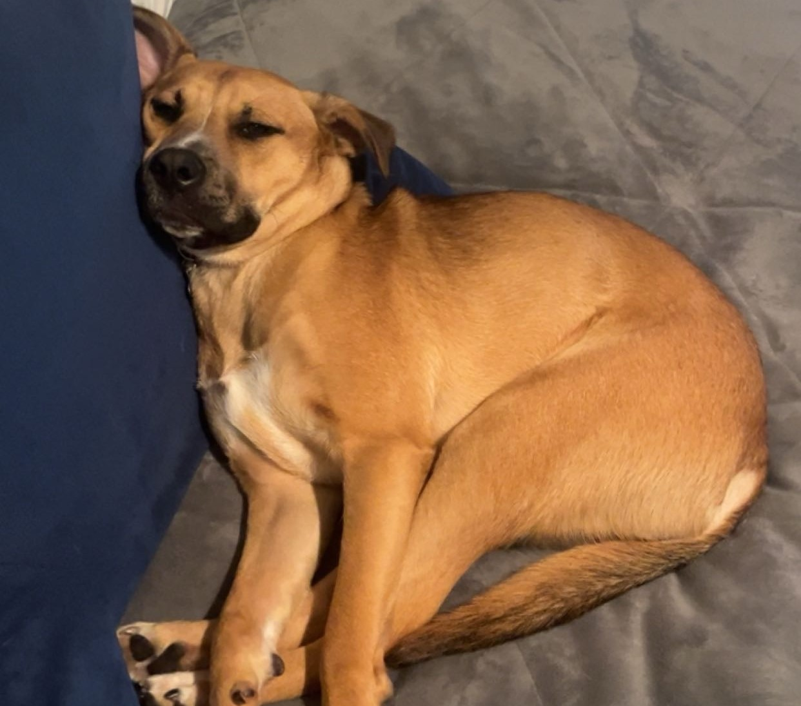

From an early age, I've been fascinated by the power of technology and its potential to solve real-world problems. This curiosity led me to pursue a BBA in Computer Information Systems at Texas State University. Throughout my academic journey, I have continually sought opportunities to deepen my understanding of how technology can be harnessed to make meaningful impacts. A pivotal moment for me was when I started making API calls to GPT using Python, utilizing OpenAI's technology to curate solutions for specific tasks. This experience profoundly shaped my perception of the direction in which the field of IT is moving.
My professional experience as a Client Solutions Specialist with the ITAC team further solidified my passion for IT. Working closely with clients, I gained invaluable insight into the lengths IT professionals go to not only resolve issues but also document and research the root causes to prevent future occurrences. This proactive approach to problem-solving resonated deeply with me and has become a guiding principle in my work.
Before delving into the world of IT, I honed essential skills during my time at H-E-B, where I learned the importance of time management and the ability to read social cues. These skills have proved to be incredibly beneficial when transferring my technical knowledge to support phone calls and live chats, ensuring that I can communicate effectively and empathetically with clients. Aside from the social skills I gained, I also learned to make a habit of analyzing what people buy and why.
In addition to my professional and academic experiences, I've been sharpening my automation skills through various Python projects. Whether it's developing automated invoice generation systems or creating data entry tools, I am passionate about understanding not just the "how" but the "why" behind these technologies. These projects have deepened my appreciation for the practical applications of IT and the tangible benefits they can bring to individuals and businesses alike.
As of my recent graduation, I am actively seeking entry-level opportunities with companies that prioritize employee growth and mentorship. My ideal workplace is one where innovative ideas are encouraged, and the focus is on making a positive impact on communities.
When I'm not learning to harness technology, you can find me playing guitar or bass. I also enjoy spending time with my dog, especially when the Texas weather isn't scorching hot!
From a young age, I've been intrigued by the advancement of technology and its potential to solve real-world problems. This curiosity led me to pursue a BBA in Computer Information Systems at Texas State University. Throughout my academic journey, I have continually sought opportunities to deepen my understanding of how technology can be harnessed in different aspects of business. A pivotal moment for me was when I started to play with API calls to GPT using Python, utilizing OpenAI's technology to curate outputs for specific tasks. This experience profoundly shaped my perception of the direction in which the field of IT is moving.
My experience as a Client Solutions Specialist with the TXST ITAC team further solidified my passion for IT. Working closely with clients, I gained invaluable insight into the lengths IT professionals go to not only resolve issues but also document and research the root causes to prevent future occurrences. This proactive approach to problem-solving resonated deeply with me and has become a guiding principle in my work.
Before delving into the world of IT, I honed some of my soft skills during my time at H-E-B. Specifically, I learned to empathize with peoples' problems and to think quickly and proactively to satisfy needs. These skills have proved to be incredibly beneficial when transferring my technical knowledge to support phone calls and live chats, or even when discussing projects and negotiating with my peers.
In addition to my professional and academic experiences, I've been sharpening my automation skills through various Python projects. Whether it's developing automated invoice generation systems or creating data entry tools, I am passionate about understanding not just the "how" but the "why" behind these technologies. These projects have deepened my appreciation for the practical applications of IT and the tangible benefits they can bring to individuals and businesses alike.
At the same time I am continuing my education on Data Analytics software through UT McCombs school of Business's online bootcamp program between now and march of next year. As the months of my participation in this program progress, I am excited to showcase specific skills and projects I am actively working on right here on this website and on my github page.
As of my recent graduation, I am actively seeking entry-level opportunities with companies that prioritize employee growth and mentorship. My ideal workplace is one where innovative ideas are encouraged.
When I'm not in front of a computer, you can find me playing the guitar and bass, or in the gym. I also enjoy going for a run with my dog in the mornings (before that scorching Texas sun shows itself!).
This Website: https://github.com/zachthooks/zachthooks.github.io
Download my resume here.
Phone: (210) 787-0346
Email: zhooks558@gmail.com
LinkedIn: https://www.linkedin.com/in/zachary-hooks-372871232/